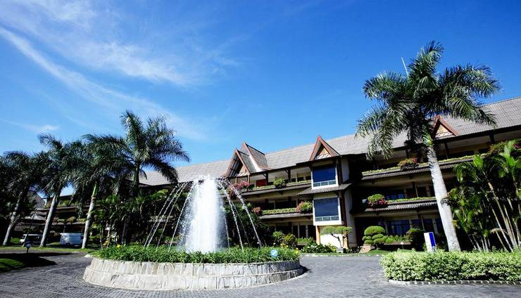
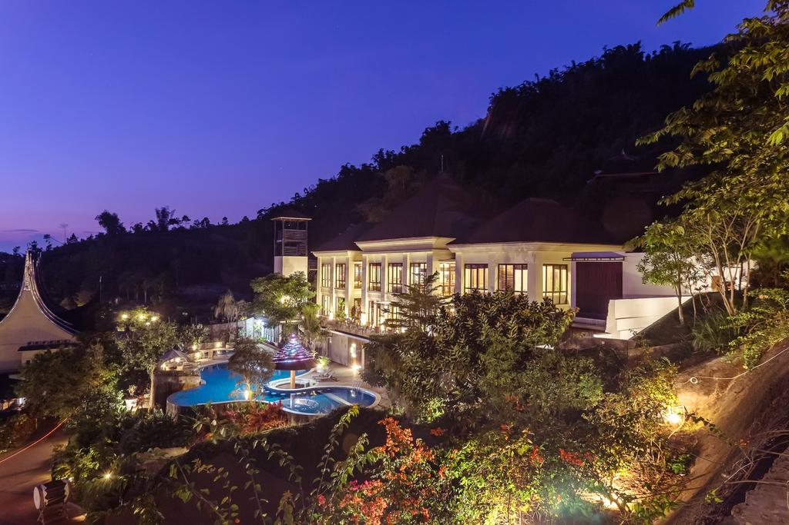
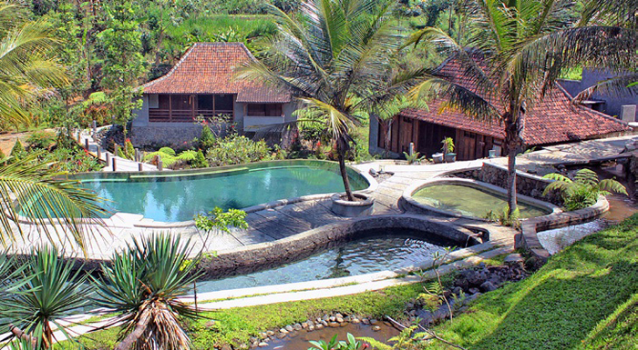
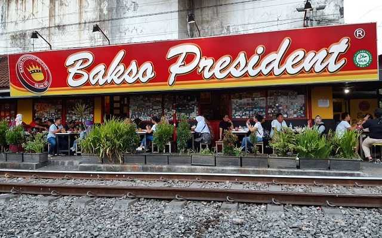
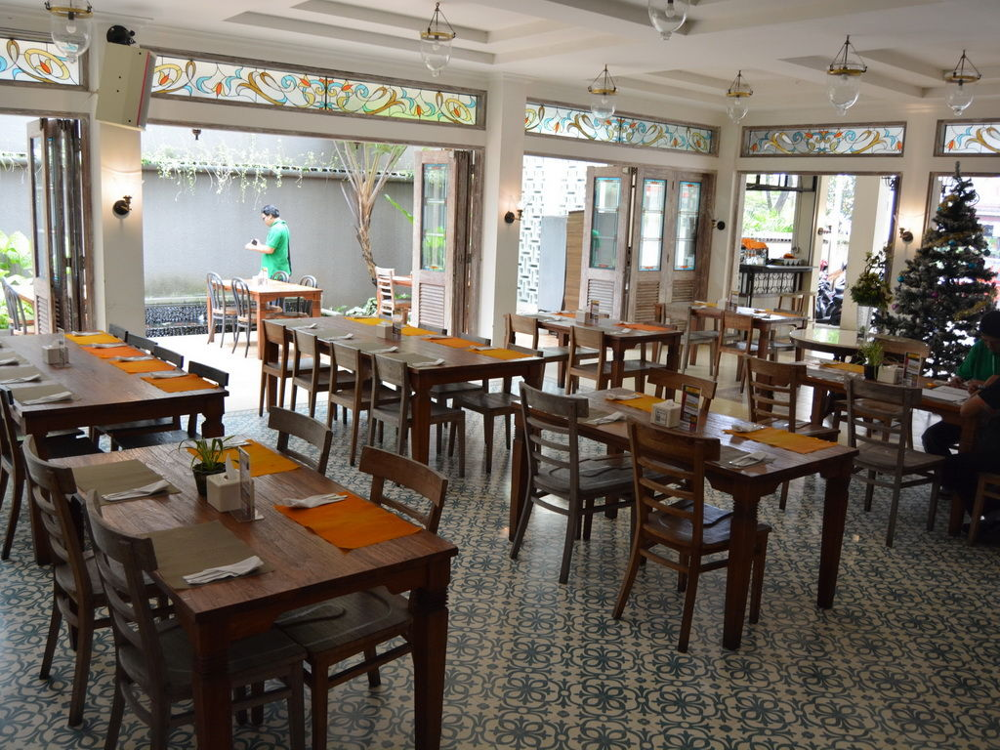
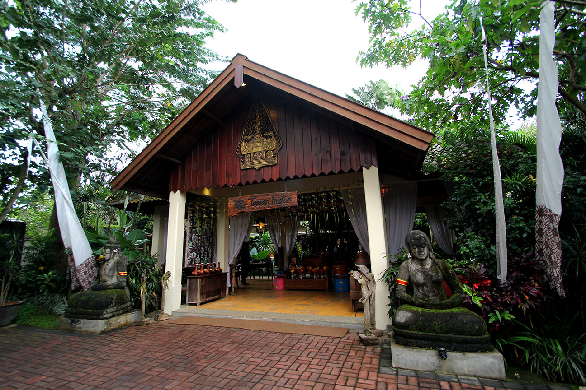
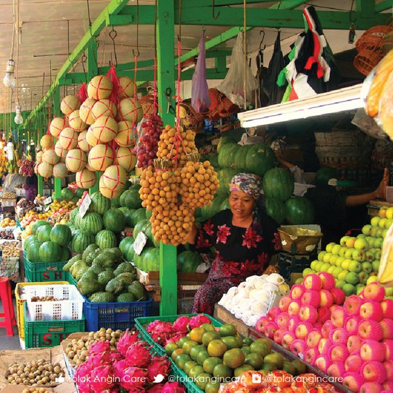
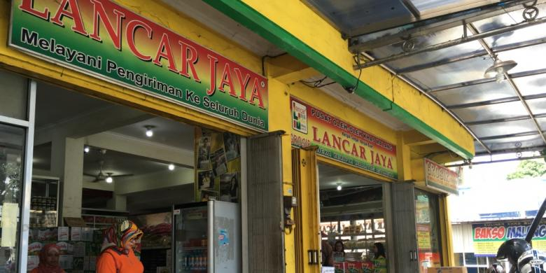
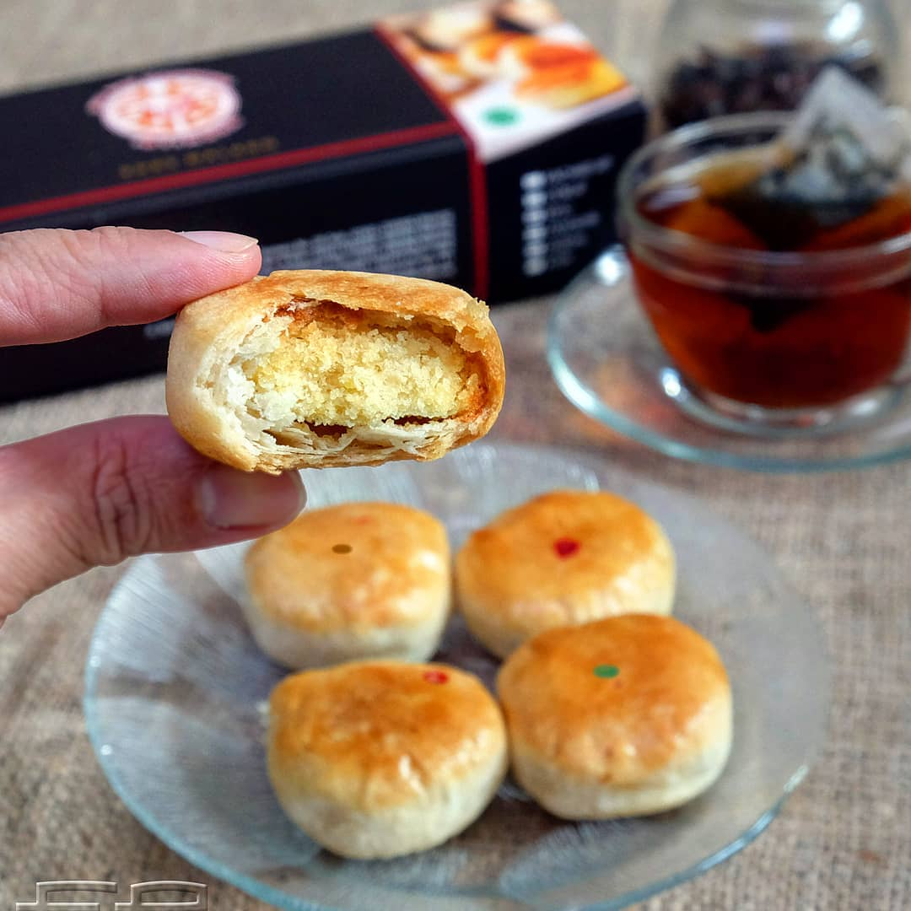

1. Kusuma Agrowisata Hotel

Terletak di kota Batu, Kusuma Agrowisata bisa dibilang sebagai pelopor wisata agro di Indonesia. Berdiri di atas lahan seluas 60 hektar, Kusuma Agrowisata tidak hanya memiliki penginapan, tapi juga area wisata perkebunan sendiri yang menjadi daya tarik utamanya. Ada kebun apel, jeruk, jambu merah, buah naga, dan stroberi yang buahnya bisa Anda petik sendiri. Selain itu, hotel ini menyediakan wahana outbound, air soft gun, ATV ride, flying fox, hingga waterpark. Dengan fasilitas dalam hotel sebanyak ini, liburan Anda bersama keluarga pasti terasa lebih menyenangkan.
2. Jambuluwuk Batu Resort

Berjarak hanya 10 menit dari Jatim Park dan 15 menit dari Batu Night Spectacular di kota Batu, Malang, Jambuluwuk Batu Resort bisa menjadi pilihan Anda untuk berlibur bersama keluarga besar. Mengapa? Karena resor ini menyediakan villa berisi 3 hingga 4 kamar dalam satu bangunan villa dan dilengkapi dengan fasilitas seperti dapur, meja makan dengan 6 kursi, ruang keluarga lengkap dengan TV kabel, wi-fi gratis, serta kamar mandi di setiap kamarnya. Dikelilingi taman asri yang sejuk, Jambuluwuk Batu Resort juga memiliki berbagai fasilitas menarik untuk liburan besama anak, seperti kolam renang, playground, flying fox, ATV, lapangan tenis, lapangan basket, jogging track, kolam pancing, hingga pusat kebugaran, sauna, dan tempat karaoke.
3. Kampung Lumbung Boutique Hotel

Satu lagi hotel di kota Batu yang bisa menjadi pilihan liburan Anda bersama keluarga, Kampung Lumbung Boutique Hotel namanya. Memiliki dua jenis akomodasi, kamar biasa dan villa, Kampung Lumbung Boutique Hotel memiliki 16 kamar dan 5 villa yang bisa disewa untuk liburan bersama keluarga. Berbagai fasilitas menarik pun telah disediakan, seperti kolam renang, taman, tempat spa, dan area outbound. Dengan mengusung konsep eco friendly boutique hotel, Anda bisa menikmati suasana alam yang nyaman dan menyegarkan.
4. Bakso President Malang

Apa yang kamu bayangkan jika menyantap bakso di pinggir rel kereta? Untuk merasakannya, kamu bisa langsung menuju Bakso President Malang di Jalan Batanghari No 5, Rampal Celaket, Klojen. Lokasi tempat makan ini tepat di samping rel kereta yang masih aktif, jadi kamu bisa merasakan sensasi bergetar saat makan ketika kereta melaju.
Restoran satu ini cukup terkenal sebagai tempat makan bakso paling enak di Malang. Harganya pun termasuk cukup murah, yakni sekitar Rp10.000–Rp20.000 saja. Menu andalannya sendiri adalah Bakso Spesial yang dijual dengan harga Rp20.000. Kamu juga bisa menambah lontong atau mi dengan membayar Rp1.000 per porsi. Jika ingin mencobanya, kamu bisa datang pukul 08:00–21:30 setiap harinya.
5. Gardenia Resto

Seperti namanya, restoran satu ini mengusung suasanagardenalias taman. Mulai dari peletakan berbagai tanaman, hingga keberadaan kolam membuat suasana restoran ini cukup nyaman untuk dikunjungi. Kamu juga bisa memilih dua area yang tersedia, yaituindoordanoutdoor. Kamu bisa menuju Jalan Bandung No 28, Penanggungan, Klojen, setiap hari pukul 10:00–22:00 untuk mengunjungi tempat makan di Malang ini.
Khusus hidangannya, Gardenia Resto menawarkan menu khas Asia. Salah satu menu andalannya adalah Sweet Sour Dory yang dijual seharga Rp32.000. Ada pula berbagai racikan iga yang terkenal cukup lezat di sini. Siapkanlah uang sekitar Rp150.000 jika kamu berniat untuk mencoba hidangan di restoran ini, ya!
6. Taman Indie Resto

Jika ingin mengunjungi restoran yang kental akan budaya Jawa, kamu bisa datang ke Taman Indie Resto. Nuansa Jawa yang diusung restoran ini juga didukung dengan suasana alam sekitarnya. Mulai dari taman, hingga pemandangan sungai bisa dengan mudah kamu lihat di sini. Karena suasananya yang cukup indah, tak jarang restoran ini dijadikan lokasi acara besar seperti ulang tahun ataupun pernikahan.
Khusus hidangannya, Taman Indie Resto menawarkan ragam menu tradisional nusantara. Beberapa menu andalannya adalah Udang Bakar Jimbaran, Sop Buntut, Sop Kikil, dan masih banyak lagi. Ingin mencobanya? Kamu bisa langsung menuju Jalan Lawang sewu Golf 2-18, Pandanwangi, Blimbing. Setiap harinya, tempat makan terkenal di Malang ini buka pukul 10:00–22:00.
7. Oleh-Oleh Pasar Buah Dewi Sri Batu

Bukan hal baru jika Kota Malang di identikkan sebagai kota apel. Kota ini memang penghasil buah apel yang sangat khas. Dan meskipun apel Malang sendiri sudah banyak dijual di banyak tempat termasuk pinggir-pinggir jalan, namun membeli langsung dari daerah tempatnya ditanam tentu akan memberikan kepuasan sendiri. Oleh-oleh Pasar Buah Dewi Sri Batu.
Dan salah satu tempat terbaik untuk berburu Apel Malang adalah di Pasar Buah dan Sayur Dewi Sri Batu. Disini kamu membeli apel asli Malang segar dengan harga yang sangat terjangkau. Bukan hanya apel saja yang di jual, disini kamu dapat menemukan semua hasil bumi dari para pedagang, seperti sayur mayur juga bunga.
Pasar Buah Dewi Sri Batu terletak di Pemandian Dewi Sri, Jl. Abdul Manan, Pujon, Batu. Kamu dapat cek lewat google maps untuk lokasi Pasar Buah Dewi Sri. Anda juga bisa mengunjungi Kusuma Agrowisata Batu yang bisa jadi referensi wisata lain di Batu Malang ini.
8. Keripik Tempe Swari dan Lancar Jaya

Ini dia jajanan atau oleh-oleh yang bisa di bilang khas Malang banget; keripik tempe. Dan salah satu penjual sekaligus produsen yang sudah di kenal masyarakat adalah Swari dan Lancar Jaya. Toko oleh-oleh ini berlokasi di Sanan yang memang pusatnya kampung produsen keripik tempe di Malang. Dari kota Surabaya kamu bisa ikut Travel Surabaya Malang untuk menuju lokasi ini.
Dengan harga sangat ekonomis, wajar saja jika toko ini selalu ramai di serbu oleh wisatawan untuk berburu oleh-oleh. Selain itu banyak juga varian keripik lainnya yang tidak berbahan dasar tempe. Lokasi tepatnya ada di Jl Sanan no 30, Malang, kamu bisa langsung kesana untuk hunting keripik untuk di jadikan oleh-oleh.
9. Pia Cap Mangkok

Bukan seperti Bakpia Pathuk khas Jogja, Pia Mangkok ini termasuk tempat oleh-oleh Malang yang sudah cukup melegenda karena telah ada sejak tahun 1959. Pia dari kota Malang ini memiliki bentuk yang seperti mangkok dengan kulit yang cukup keras.
Banyak varian rasa yang di tawarkan, anda dengan bebas dapat memilih dan mencoba tester yang mereka sediakan. Lokasi Pia Cap Mangkok ini berada di Ruko Grand Soekarno Hatta Kav. 16-17.